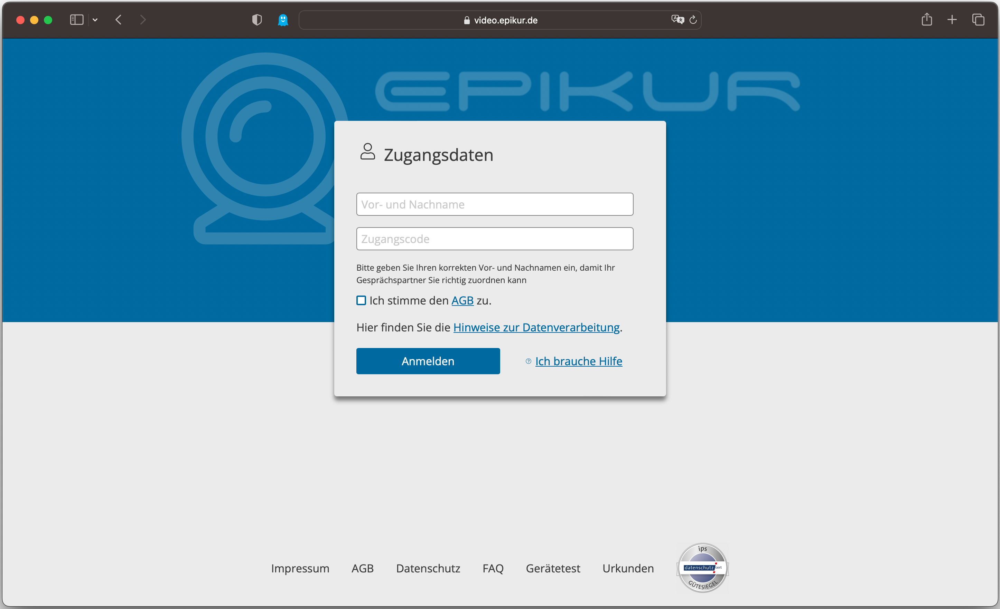

Videosprechstunde
Project Description
Videosprechstunde is a fully integrated video teletherapy solution for mental health professionals and doctors. It allows them to easily conduct online therapy sessions from any location by meeting with their patients in a video chat. It was developed by Spreewunder for Epikur Software GmbH & Co. KG.
My Contribution
As a frontend developer on the Videosprechstunde project, my role involved the following:
- Creating the prototype application using WebComponents (LitElement) to ensure maximum compatibility for potential integration into other frameworks
- Implemented logic for handling incoming WebRTC MediaStreams and DataChannels
- Worked closely with developers and designers from Epikur Software. Followed the given design and worked in an agile team environment with YouTrack tracking software